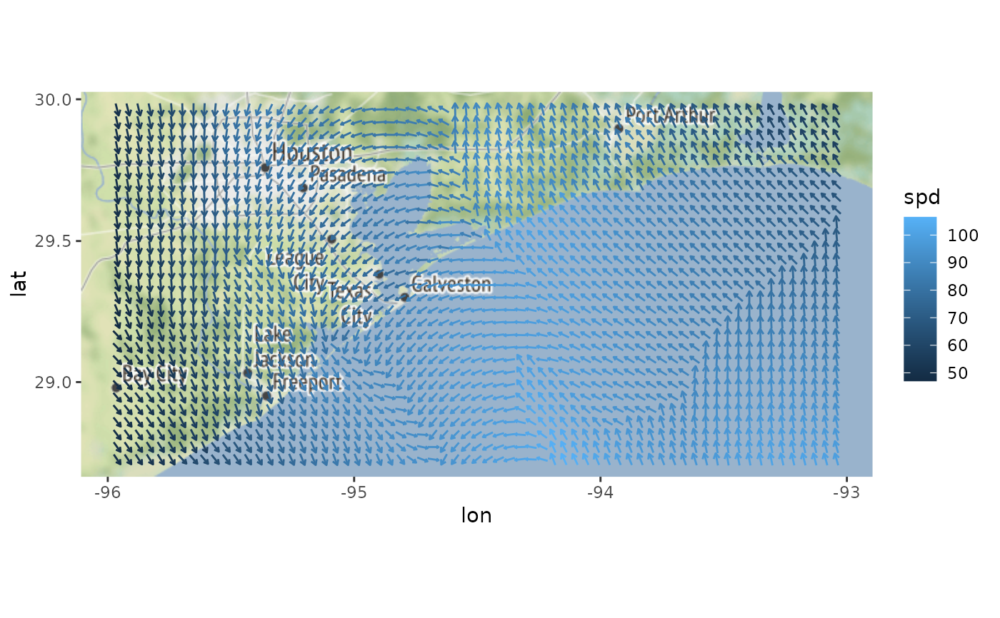

Displays the direction and length of vectors on a graph.
geom_quiver(
mapping = NULL,
data = NULL,
stat = "quiver",
position = "identity",
center = FALSE,
rescale = FALSE,
vecsize = NULL,
na.rm = FALSE,
show.legend = NA,
inherit.aes = TRUE,
...
)
GeomQuiver
stat_quiver(
mapping = NULL,
data = NULL,
geom = "quiver",
position = "identity",
center = FALSE,
rescale = FALSE,
vecsize = NULL,
na.rm = FALSE,
show.legend = NA,
inherit.aes = TRUE,
...
)
StatQuiverAn object of class GeomQuiver (inherits from GeomSegment, Geom, ggproto, gg) of length 2.
An object of class StatQuiver (inherits from Stat, ggproto, gg) of length 3.
Set of aesthetic mappings created by aes() or
aes_(). If specified and inherit.aes = TRUE (the
default), it is combined with the default mapping at the top level of the
plot. You must supply mapping if there is no plot mapping.
The data to be displayed in this layer. There are three options:
If NULL, the default, the data is inherited from the plot
data as specified in the call to ggplot().
A data.frame, or other object, will override the plot
data. All objects will be fortified to produce a data frame. See
fortify() for which variables will be created.
A function will be called with a single argument,
the plot data. The return value must be a data.frame, and
will be used as the layer data. A function can be created
from a formula (e.g. ~ head(.x, 10)).
The statistical transformation to use on the data for this layer, as a string.
Position adjustment, either as a string, or the result of a call to a position adjustment function.
If FALSE (the default), the vector lines will start at the specified x and y. If TRUE, the arrows will be centered about x and y.
If FALSE (the default), the vectors will not be rescaled. If TRUE, the vectors given by (u, v) will be rescaled using the scale function.
By default (NULL), vectors sizing is automatically determined. If a grid can be identified, they will be scaled to the grid, if not, the vectors will not be scaled. By specifying a numeric input here, the length of all arrows can be adjusted. Setting vecsize to zero will prevent scaling the arrows.
If FALSE (the default), removes missing values with a warning. If TRUE silently removes missing values.
logical. Should this layer be included in the legends?
NA, the default, includes if any aesthetics are mapped.
FALSE never includes, and TRUE always includes.
It can also be a named logical vector to finely select the aesthetics to
display.
If FALSE, overrides the default aesthetics,
rather than combining with them. This is most useful for helper functions
that define both data and aesthetics and shouldn't inherit behaviour from
the default plot specification, e.g. borders().
Other arguments passed on to layer(). These are
often aesthetics, used to set an aesthetic to a fixed value, like
colour = "red" or size = 3. They may also be parameters
to the paired geom/stat.
The geometric object to use display the data
centered x start position for velocity arrow
centered y start position for velocity arrow
centered x end position for velocity arrow
centered y end position for velocity arrow
library(ggplot2)
# Quiver plots of mathematical functions
field <- expand.grid(x=seq(0,pi,pi/12), y=seq(0,pi,pi/12))
ggplot(field, aes(x=x,y=y,u=cos(x),v=sin(y))) +
geom_quiver()
# Removing automatic scaling
ggplot(seals, aes(x=long, y=lat, u=delta_long, v=delta_lat)) +
geom_quiver(vecsize=NULL) +
borders("state")
# Centering arrows is useful for plotting on maps.
library(dplyr)
#>
#> Attaching package: ‘dplyr’
#> The following objects are masked from ‘package:stats’:
#>
#> filter, lag
#> The following objects are masked from ‘package:base’:
#>
#> intersect, setdiff, setequal, union
library(ggmap)
#> Google's Terms of Service: https://cloud.google.com/maps-platform/terms/.
#> Please cite ggmap if you use it! See citation("ggmap") for details.
wind_data <- wind %>% filter(between(lon, -96, -93) & between(lat, 28.7, 30))
qmplot(lon, lat, data=wind_data, extent="panel", geom = "blank", zoom=8, maptype = "toner-lite") +
geom_quiver(aes(u=delta_lon, v=delta_lat, colour = spd), center=TRUE)
#> Source : http://tile.stamen.com/terrain/8/59/105.png
#> Source : http://tile.stamen.com/terrain/8/60/105.png
#> Source : http://tile.stamen.com/terrain/8/61/105.png
#> Source : http://tile.stamen.com/terrain/8/59/106.png
#> Source : http://tile.stamen.com/terrain/8/60/106.png
#> Source : http://tile.stamen.com/terrain/8/61/106.png
